[ ST-ROOKIE · DESIGN/SLEEK-UI ]
Sleek 3D 작업 기록
2026-10-10 세션. 홈(무채색)과 3D 화면의 톤 차이를 줄이는 것에서 시작해, 상단 알약 UI, 반실사 나무·트림시트, 밤 조명 굽기, 바다까지 정리했다. 작업 위치는 ../ST-ROOKIE-dev(design/sleek-ui), 커밋 전.
[ 01 ]
톤 진단: 홈과 3D 화면의 차이
측정
- 평균 밝기는 비슷(37 vs 33)했고, 차이는 채도(0.02 vs 0.60), 푸른 픽셀(0% vs 85%), 하이라이트(255 vs 101)였다.
- UI 틀은 남색(
#141b24), 강조색은 하늘색, 영문 글꼴(Montserrat)이 3D 화면에 없었다.
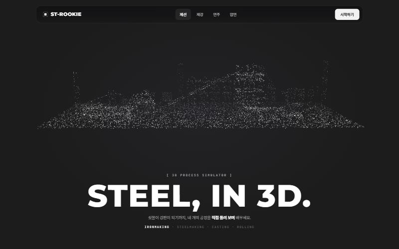
홈: 무채색 + 흰색
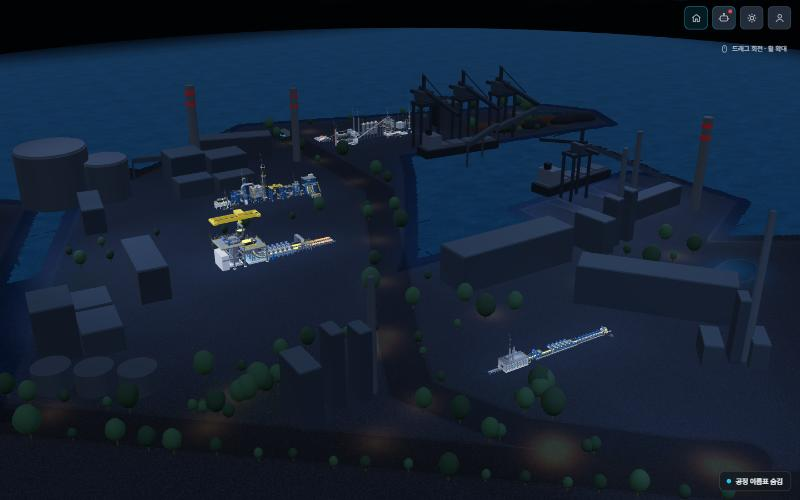
수정 전 3D(다크): 남색 위주
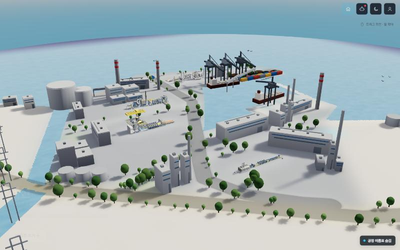
수정 전 3D(라이트): 진한 파란 바다·하늘
[ 02 ]
색감과 카메라
- 무채색으로 한 번 바꿨다가, 피드백에 따라 원래 색감 + 채도 60%로 정리. UI 틀만 검정.
- 공정 설비는 원래 색 유지(쇳물 주황 등 의미 있는 색).
- 공정 화면이 오른쪽으로 쏠리던 원인(
_resize가 폭 10% 밀기)을 찾아, 메뉴·패널에 가리지 않는 영역 가운데로 맞춤(setupFraming).
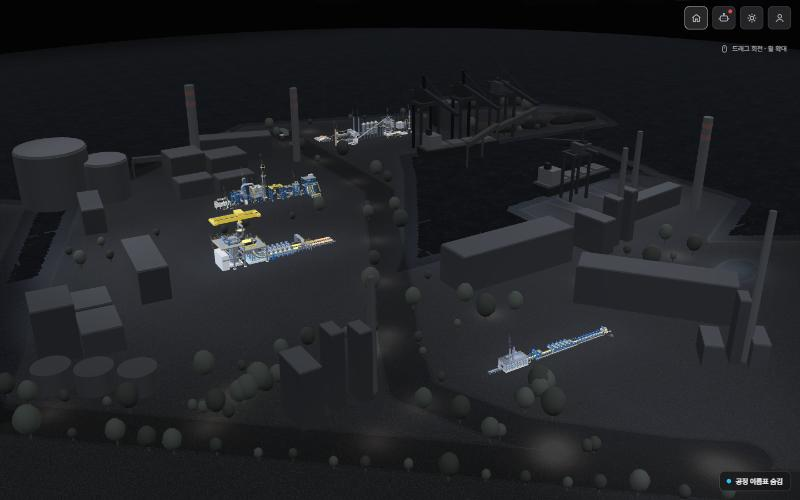
무채색 시도(다크)
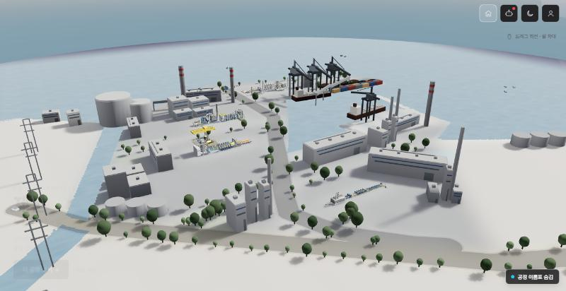
원래 색 + 채도 60%(라이트)
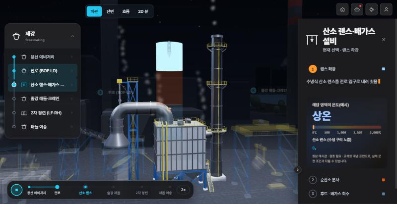
시연 중 설비가 메뉴·패널 사이 가운데
[ 03 ]
상단 알약 UI (레퍼런스: Colonia Zacamil)
- 오른쪽 위 아이콘 4개 → 위쪽 가운데 검정 알약 하나. 공정 고르기는 알약이 늘어나며 펼쳐짐.
- 외관 | 2D 뷰, 전체 보기도 알약에 통합. 단면·흐름 탭 제거(백엔드 연결 없음 확인).
- 이어 풀기 알림: 3D 인트로 뒤 약 3초 보였다가 사라지는 한 줄 토스트.
- 한글에 모노 글꼴을 쓰면 자간이 벌어져서, 모노는 영문·숫자 라벨(
[ 01 ])에만.
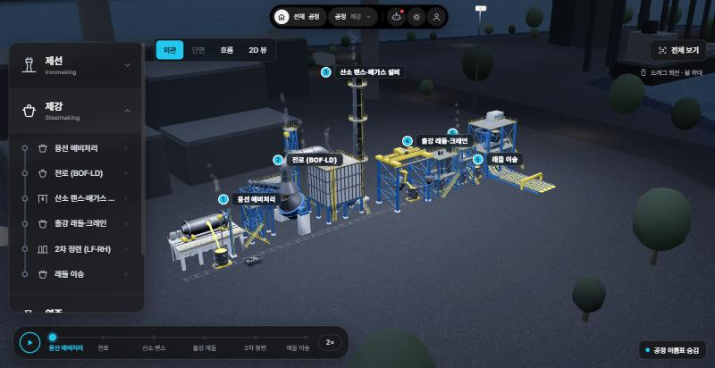
알약 메뉴(공정 · 제강)
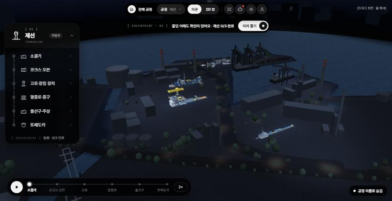
이어 풀기 토스트
[ 04 ]
UI 통일: 왼쪽 메뉴·재생 바·오른쪽 패널
- 검정 + 둥근 알약, 선택은 흰 칩, 재생은 흰 동그라미 + 검은 아이콘.
- 오른쪽 패널은 3D 위에 뜬 카드로, 3D 영역을 자르지 않음. 강조색 하늘색 → 흰색.
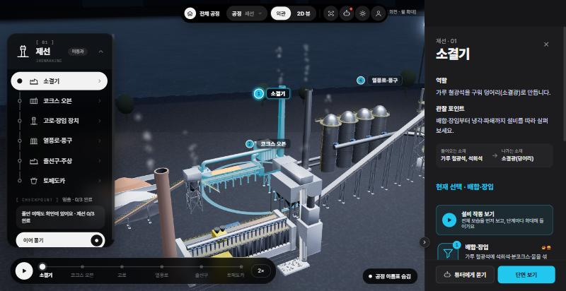
설비 선택 시 메뉴·패널
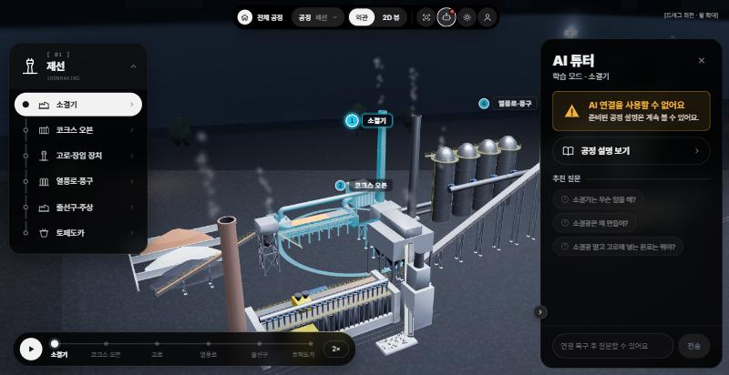
AI 튜터 패널
[ 05 ]
반실사 나무와 건물 트림시트
- 공 모양 수관 → 잎 그림 평면 4장(세로 3 + 수평 1). 잎 그림 2종을 아틀라스 1장에, UV 겹치기로 그리기 호출 절반.
- 건물 143개가 트림시트 1장 공유: 바닥 쪽 얼룩 / 벽 패널 이음매·빗물 자국 / 지붕 자갈. 노이즈 → 블러 → 합성, ±10% 안쪽.
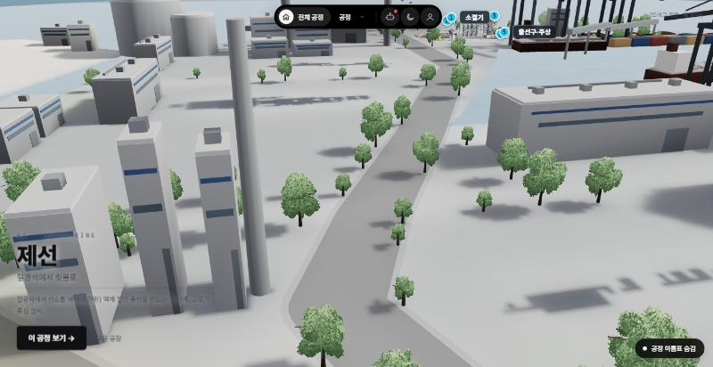
교체된 나무(전체)
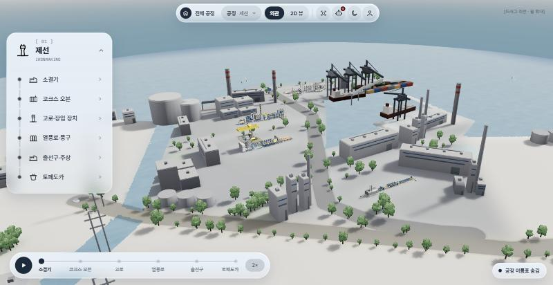
나무 근접
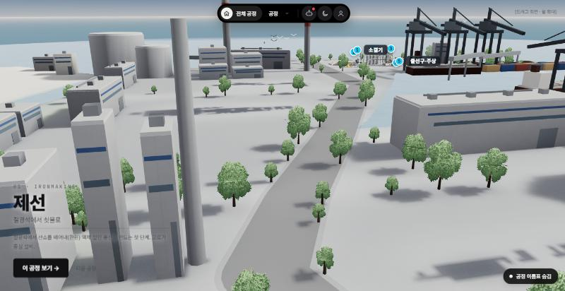
트림시트가 들어간 건물
[ 06 ]
라이트 모드 캡슐
- 푸른 기 도는 우윳빛(
#e9f0f7), 위쪽 절반 불투명 → 아래로 투명 + 뒤 흐림.
- 최종: 외곽선 없음, 선택·활성은 밝은 청록(
#3f9db4) + 흰 글씨.
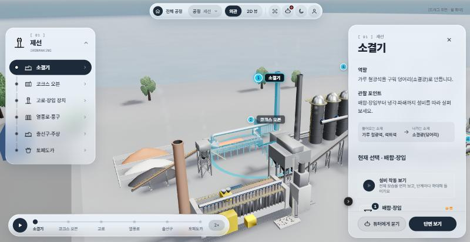
라이트 모드 캡슐(외곽선 제거 전)
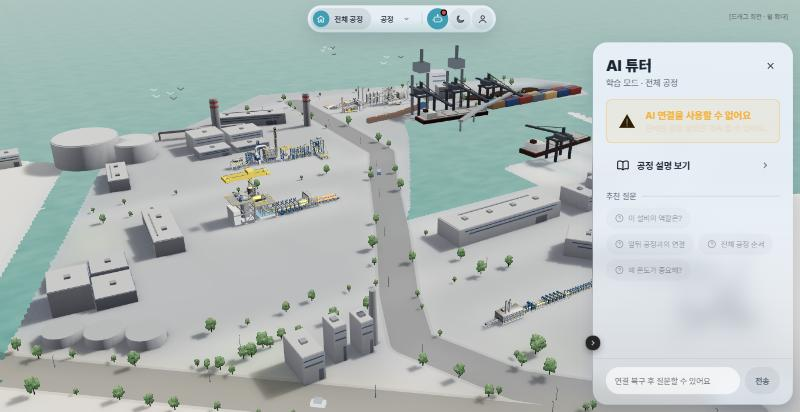
최종: 외곽선 없음, 청록 활성
[ 07 ]
원경 정리와 시연 패널
- 바다 건너 실루엣 건물 156개 숨김(반지름 250m 밖).
- 시연 중 오른쪽 패널: 설비 머리 1초 → 지금 단계 하나만, 높이는 내용만큼.
- 공정 메뉴를 왼쪽 위 한 줄 캡슐로. 재생하면 자동 접힘, 누르면 다시 펼침.
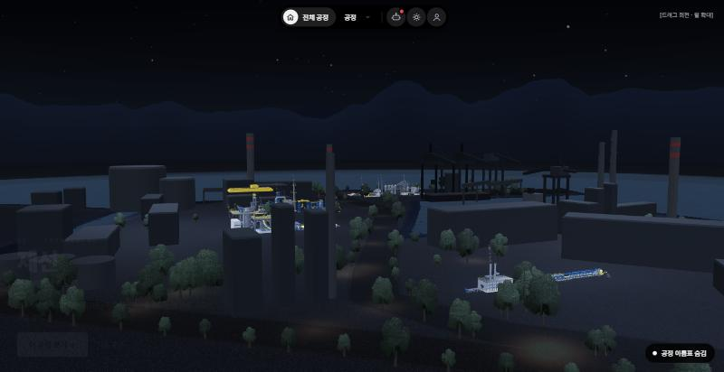
먼 건물 제거
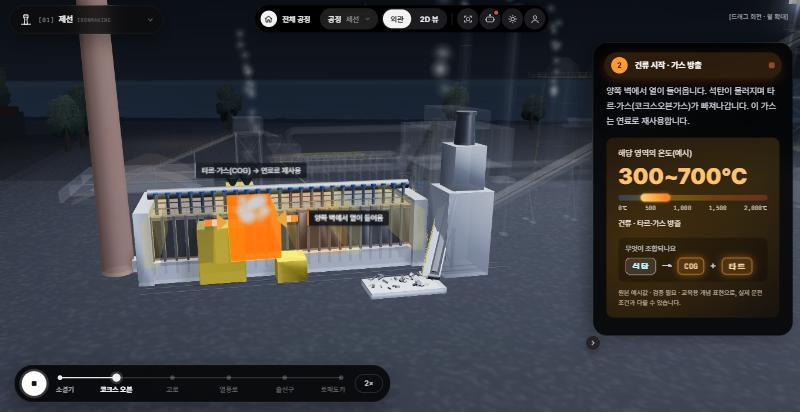
시연 중 단계 카드 하나
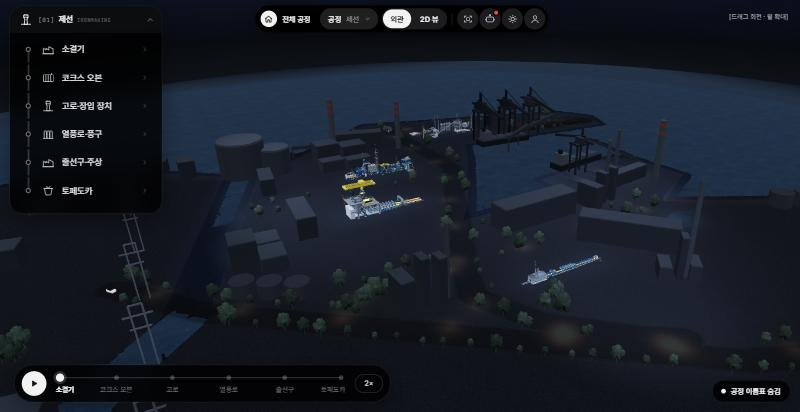
왼쪽 위 공정 캡슐
[ 08 ]
가로등과 축척
- 빛 웅덩이 37곳에 로우폴리 가로등(인스턴스 2개). 빛은 바닥 라이트맵에 굽고 실제 조명 없음.
- 공정 기준 1단위 ≈ 12m. 주변 물체가 2~8배 커서 건물 높이 ×0.5, 나무 ×0.5, 가로등 ×0.3.
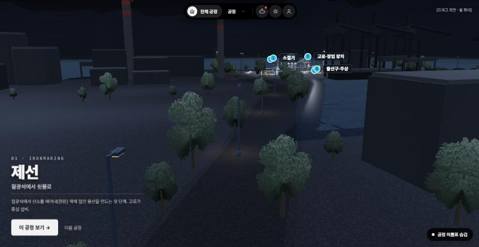
로우폴리 가로등
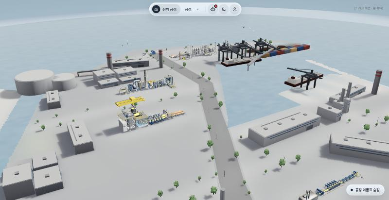
축척 조정 후(공정이 돋보임)
[ 09 ]
밤 조명 굽기
- 공정 꼭짓점에 환경광 + 푸른 달빛 키라이트(그림자 포함)를 구움. 켜고 끄며 재서 원래의 약 70% 밝기.
- 빈터 3곳에 달빛 옴니를 바닥 라이트맵·건물 꼭짓점에 구움. 위치는 스크린샷 4점으로 화면→지면 호모그래피를 세워 계산.
- 재질은 그대로라 선택 강조·쇳물 발광은 유지.
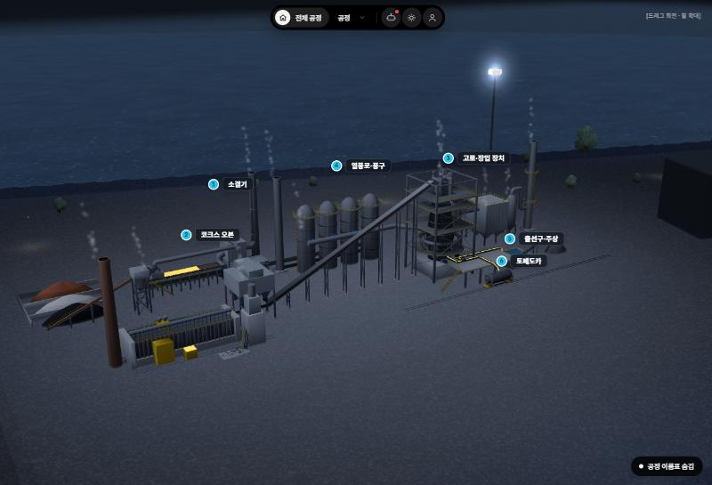
구운 키라이트로 명암이 생긴 제선 공정
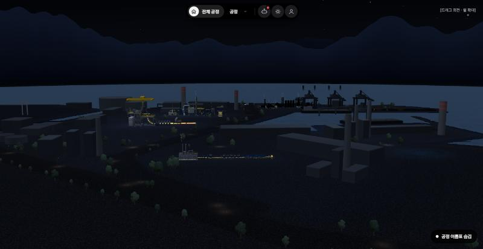
다크 최종(투광등 굽고 조명 제거)
[ 10 ]
바다와 겹치는 작업 정리
- 바다가 두 겹(가까운 셰이더 판 + 먼 링)이라 경계가 보였음 → 같은 셰이더의 원형 먼 바다(반지름 2.8km)로 통일.
- 수평선 글로우 원통·가짜 안개 띠·하늘색 섞기가 겹쳐 '케이크'처럼 층짐 → 모두 삭제. 바다는 에메랄드 → 옅은 에메랄드 그라데이션, 하늘과는 또렷하게.
- 실제 조명: 투광등 4·밤 키라이트·구역 조명 2 제거 → 남은 것 방향광 1, 하늘빛 2.
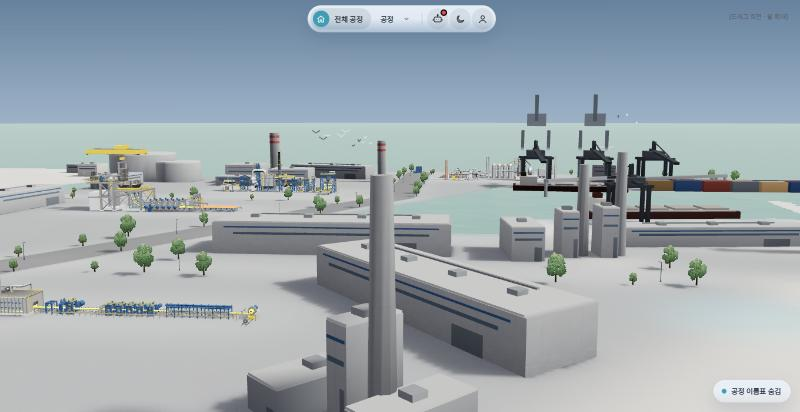
라이트 최종: 바다 그라데이션 + 또렷한 수평선
[ FILES ]
변경 파일과 조절 값
| 파일 | 내용 |
|---|
frontend/3d-demo/sleek-overview.js | 장면 덧붙임 전부(색감, 카메라 보정, 나무, 트림시트, 가로등, 축척, 밤 굽기, 바다, 조명 정리). 공용 scene_v3.js는 수정하지 않음. |
frontend/3d-demo/Steel Academy v4.dc.html | 알약 UI, 메뉴·패널·재생 바·토스트, 라이트 캡슐 CSS, 시연 패널 동작 |
| 값 | 위치 | 현재 |
|---|
| 배경 채도 | GRADE | 0.6 |
| 건물·나무·가로등 축척 | K_BLD, K_TREE, K_LAMP | 0.5, 0.5, 0.3 |
| 트림시트 세기 | TRIM_AMT | 0.4 |
| 밤 공정·건물 밝기 | PROC_GAIN, BLD_GAIN | 0.38, 1.4 |
| 키라이트 | KEY_DIR, KEY_COL | 서쪽 위, 푸른 달빛 |
| 빈터 옴니 | NIGHT_OMNI | 3곳, 반경 55m |
| 라이트 바다색 | makeSea().setTheme | #4f8f86 → #a9cfc6 |
백엔드 남은 일은 docs/backend-todo.md, 다음 작업은 docs/next-steps-sleek.md.